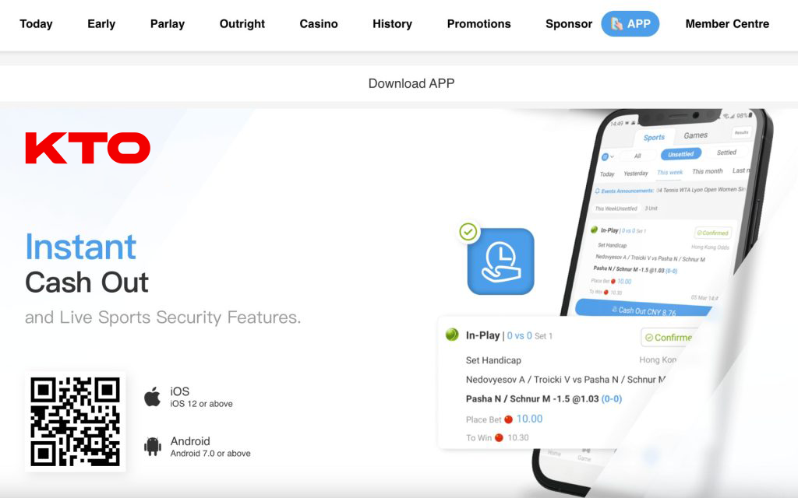

Những Cách Hiệu Quả Phân biệt KTO Thật Hay Giả
Phân biệt giữa trang web cá cược KTO thật hay giả là một nhiệm vụ quan trọng để đảm bảo an toàn và bảo mật của bạn khi tham gia vào hoạt động cá cược trực tuyến. Với sự phát triển của internet, đã xuất hiện nhiều trang web giả mạo cố gắng mô phỏng KTO để lừa đảo người chơi. Trong bài viết này, chúng tôi sẽ hướng dẫn bạn cách phân biệt giữa KTO thật và các trang web giả mạo. Hãy cùng tìm hiểu cách thực hiện điều này một cách cẩn thận và hiệu quả.
Tại sao cần phân biệt giữa KTO thật và giả?
Cá cược trực tuyến là một ngành công nghiệp phát triển nhanh chóng và hấp dẫn. Điều này đã tạo điều kiện thuận lợi cho sự xuất hiện của các trang web giả mạo, nơi lừa đảo và rủi ro an ninh thông tin trở nên phổ biến. Phân biệt giữa KTO thật và giả là cách để bạn tránh bị lừa đảo, bảo vệ thông tin cá nhân và tài chính của mình, cũng như đảm bảo trải nghiệm cá cược an toàn và tin cậy.
Phân biệt giữa trang web KTO thật và các trang web giả mạo là cực kỳ quan trọng vì có nhiều lý do sau đây:

Bảo vệ thông tin cá nhân và tài chính:
Nếu bạn không phân biệt được trang web KTO thật và giả, bạn có thể tiết lộ thông tin cá nhân và tài chính quý báu cho các kẻ lừa đảo. Điều này có thể dẫn đến việc bị lừa đảo, mất tiền, và thậm chí mất danh tính.
Bảo vệ khỏi lừa đảo và lừa đảo trực tuyến:
Trang web cá cược giả mạo thường tổ chức các hoạt động lừa đảo, manipulatete, và không đáng tin cậy. Phân biệt giữa KTO thật và giả giúp bạn tránh những rủi ro này.
Bảo đảm trải nghiệm cá cược công bằng và an toàn:
Khi bạn tham gia vào trang web KTO thật, bạn có cơ hội trải nghiệm cá cược công bằng và an toàn. Trong khi đó, trang web giả mạo có thể thay đổi cơ hội chiến thắng, và bạn sẽ không có cơ hội để bảo vệ quyền lợi của mình.
Luôn luôn đầu tư vào các hoạt động cá cược hợp pháp:
Phân biệt giữa KTO thật và giả đảm bảo rằng bạn đang đầu tư tiền vào các hoạt động cá cược hợp pháp và đáng tin cậy. Các trang web giả mạo có thể không tuân thủ các quy định pháp lý và có thể làm bạn rơi vào rắc rối pháp lý.
Bảo vệ danh tiếng của KTO và người chơi:
Phân biệt giữa KTO thật và giả giúp bảo vệ danh tiếng của công ty và người chơi. Các trang web giả mạo có thể gây hại cho uy tín của KTO và làm tổn thương người chơi.
Phòng ngừa hoạt động giả mạo và lừa đảo trực tuyến:
Báo cáo và ngăn chặn các trang web giả mạo là cách giúp ngăn chặn sự lan truyền của lừa đảo và bảo vệ người chơi khác khỏi rủi ro.
Phân biệt giữa KTO thật và giả đòi hỏi sự cảnh giác và tư duy cẩn thận. Bạn cần luôn kiểm tra tính xác thực của trang web, đảm bảo thông tin cá nhân và tài chính được bảo vệ, và báo cáo các trang web giả mạo khi bạn phát hiện chúng để đảm bảo an toàn và tin cậy trong lĩnh vực cá cược trực tuyến.
Cách phân biệt giữa KTO thật hay giả:
Kiểm tra tên miền và URL:
Bắt đầu bằng việc kiểm tra địa chỉ URL của trang web. Trang web KTO thật sẽ sử dụng tên miền chính thống, ví dụ: Tránh các tên miền kỳ quái hoặc có ký tự sai lệch.
Kiểm tra giấy phép kinh doanh:
Trang web cá cược uy tín thường phải có giấy phép hoạt động từ cơ quan quản lý phù hợp. Hãy tìm hiểu về giấy phép của KTO và xác minh tính hợp pháp của nó.
Xem xét chứng chỉ bảo mật:
Kiểm tra xem trang web có chứng chỉ bảo mật không. Biểu tượng khóa hoặc biểu tượng “https://” trên thanh địa chỉ trình duyệt cho biết trang web đang sử dụng kết nối an toàn. Trang web cá cược hoặc giao dịch trực tuyến nên luôn sử dụng kết nối an toàn để bảo vệ thông tin cá nhân.
Tìm kiếm đánh giá từ người chơi trước đó:
Đọc đánh giá từ người chơi trước đó để biết về kinh nghiệm của họ khi sử dụng KTO. Đánh giá tích cực và đánh giá tiêu cực từ người chơi có thể cung cấp thông tin quý báu.
Kiểm tra thông tin liên hệ:
Trang web KTO thật sẽ cung cấp thông tin liên hệ rõ ràng và địa chỉ văn phòng. Hãy kiểm tra xem KTO có thông tin liên hệ dễ dàng tìm thấy và cập nhật không.
Sử dụng công cụ kiểm tra trang web:
Có các công cụ trực tuyến có thể giúp bạn kiểm tra tính xác thực của trang web bằng cách xem xét các thông tin liên quan đến tên miền, giấy phép, và lịch sử của trang web.
Thận trọng với email và tin nhắn:
Hãy cảnh giác với các email, tin nhắn, hoặc quảng cáo gửi đến bạn với nội dung mời tham gia trang web mới. Các trang web giả mạo thường sử dụng chiêu trò này để lừa người dùng.
Thực hiện tìm hiểu cẩn thận:
Cuối cùng, hãy luôn thực hiện tìm hiểu cẩn thận trước khi đầu tư tiền hoặc tiết lộ thông tin cá nhân trên trang web nào. Hãy sử dụng trực tuyến và tư duy cảnh giác để đảm bảo tính an toàn và bảo mật của bạn.
KTO thật hay giả- Cách báo cáo trang web giả mạo
Nếu bạn phát hiện một trang web giả mạo hoặc gặp bất kỳ vấn đề nào liên quan đến trang web giả mạo, hãy thực hiện các bước sau để báo cáo:
Câu hỏi thường gặp
1. Làm thế nào để tôi biết xem KTO có phải là trang web cá cược thật sự hay không?
Để xác định tính xác thực của KTO, bạn nên kiểm tra giấy phép kinh doanh, đánh giá từ người chơi trước đó, thông tin liên hệ, chứng chỉ bảo mật, và đảm bảo rằng bạn sử dụng kết nối an toàn (https) khi truy cập trang web.
2. KTO có giấy phép kinh doanh không?
KTO thật sự sẽ có giấy phép kinh doanh từ cơ quan quản lý phù hợp. Hãy tìm hiểu về giấy phép của KTO và xác minh tính hợp pháp của nó.
3. Có công cụ nào giúp tôi kiểm tra tính xác thực của trang web?
Có các công cụ trực tuyến có thể giúp bạn kiểm tra tính xác thực của trang web bằng cách xem xét thông tin liên quan đến tên miền, giấy phép, và lịch sử của trang web.
4. Làm thế nào để báo cáo trang web giả mạo?
Để báo cáo trang web giả mạo, bạn nên lưu trang web đó, liên hệ với cơ quan chức năng hoặc cơ quan an ninh mạng, liên hệ với công ty gốc (KTO), và chia sẻ thông tin với cộng đồng trực tuyến để cảnh báo người khác.
Kết luận
Phân biệt giữa KTO thật hay giả là một nhiệm vụ quan trọng để bảo vệ mình khỏi sự lừa dối và lừa đảo trong lĩnh vực cá cược trực tuyến. Điều quan trọng là luôn thực hiện các bước kiểm tra cẩn thận trước khi đầu tư tiền hoặc tiết lộ thông tin cá nhân trên trang web nào. Bạn cũng nên luôn cảnh giác với sự xuất hiện của các trang web giả mạo và báo cáo vấn đề khi bạn phát hiện chúng. An toàn và bảo mật luôn là ưu tiên hàng đầu khi tham gia vào hoạt động cá cược trực tuyến.